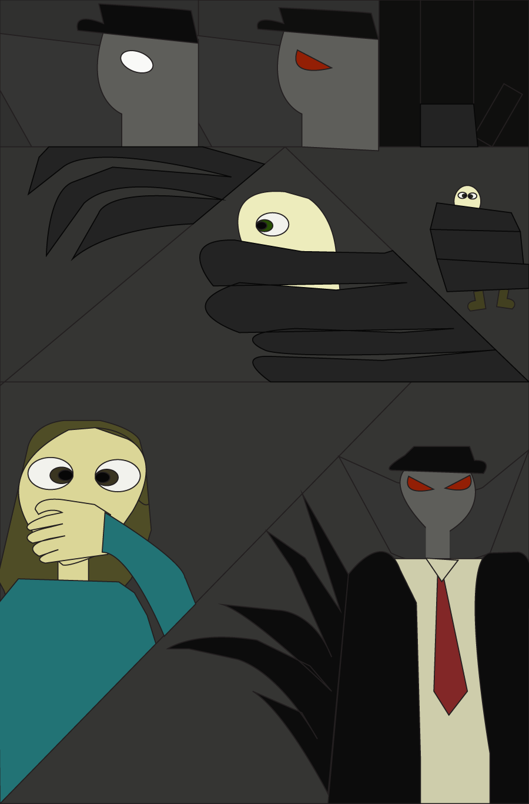

“Ghost Stranger” is an enigmatic character who roams the streets of New York City at night. To the citizens of NYC, he's an urban legend... but could he be real? He wears a large black trench coat and hat that conceals his true identity. His motives are unclear, but he always steps in to protect the innocent.He fights by utilizing shadow energy to incapacitate his enemies. On this webiste you will find the first 3 pages of the upcoming comics' series featuring this mysterious character.
To be continued